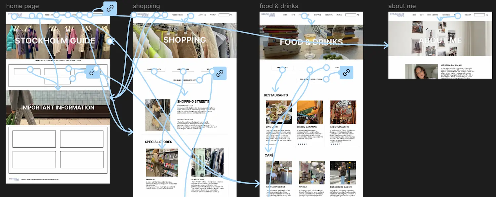

presentationskort & film
Under tema 1 fick jag en grundläggande förståelse för Figma genom arbetet med presentationskortet. Genom att använda verktyget lärde jag mig att skapa och designa visuellt tilltalande material och fick en inblick i hur digitala verktyg kan användas för att presentera idéer effektivt.
Arbetet med vårt filmprojekt gav mig ytterligare lärdomar, särskilt kring projektplanering och idéutveckling. Jag insåg vikten av att sätta upp en tydlig tidsram för att ta fram idéer, vilket hjälpte oss att hålla processen strukturerad och effektiv. Att avsätta en specifik tid för brainstorming och kreativt tänkande visade sig vara avgörande för att skapa en fungerande plan.
Genom projektet fick jag också träna på grupparbete. Att samarbeta med andra, fördela uppgifter och kommunicera tydligt blev centralt för att uppnå ett gemensamt resultat. Detta filmprojekt gav mig en chans att utveckla mina färdigheter i både kreativt skapande och samarbete, och stärkte min förståelse för hur även mindre projekt kräver planering och samordning för att lyckas.

Studiestartsprov
Under tema 2, i samband med studiestartsprovet, fick jag lära mig grunderna i HTML och CSS, vilket gav mig en tydlig förståelse för hur man bygger och designar webbsidor. Jag lärde mig att använda HTML för att strukturera innehåll genom olika element som rubriker, stycken, bilder och länkar. Med CSS fick jag möjlighet att styla dessa element, exempelvis genom att ändra färger, typsnitt, marginaler och placeringar för att skapa en mer visuellt tilltalande design.
En särskilt värdefull del av min inlärning var att arbeta med CSS Grid. Med Grid kunde jag dela upp webbsidor i rader och kolumner, vilket gav mig verktygen att skapa välorganiserade och responsiva layouter. Jag lärde mig hur man placerar element precist och hur man kan skapa en design som anpassar sig till olika skärmstorlekar, vilket är avgörande i modern webbutveckling.
Jag fick också erfarenhet av att kombinera HTML och CSS för att skapa en helhet, från att bygga en tydlig grundstruktur till att applicera designprinciper som förbättrar användarupplevelsen. Den här processen gav mig både praktiska färdigheter och en djupare förståelse för hur kodning fungerar i praktiken. Tema 2 gav mig en solid grund inom webbutveckling och inspirerade mig att fortsätta utforska ämnet vidare.


Grundläggande UX/UI
Under tema 3 designade och utvecklade jag en hemsida som fungerade som en Stockholmsguide för unga kvinnor. Jag skapade en plattform för att hjälpa min målgrupp att upptäcka staden på ett inspirerande och praktiskt sätt, med tips på aktiviteter, matställen och shopping.
I designfasen arbetade jag i Figma och följde UI-konventioner för att skapa en användarvänlig och modern layout. Jag skapade en klickbar prototyp som gjorde det möjligt att testa användarflöden och identifiera problem tidigt. Användartesterna gav värdefull feedback som jag använde för att förbättra användarupplevelsen.
Kodningen av hemsidan med HTML och CSS gav mig praktisk erfarenhet av att skapa en responsiv webbsida. Genom att reflektera över hela processen förstod jag vikten av att iterera på designen och alltid ha användaren i fokus.
Tema 3 gav mig både tekniska färdigheter i design och kodning samt en djupare förståelse för hur man balanserar estetik och funktionalitet i skapandet av en användarcentrerad hemsida.


- 
Animation
I projektet Pärljakten har jag kombinerat min designprocess i Adobe Illustrator med JavaScript-kod för att skapa en dynamisk och interaktiv spelupplevelse. Jag började med att använda Illustrator för att skapa alla spelets grafiska element, såsom pärlor, stenar, bakgrund och användargränssnitt, i kawaii-stil. Med hjälp av Illustrator kunde jag skapa detaljerade vektorbilder med mjuka linjer, stora ögon och glada uttryck som gav spelet en lekfull och charmig estetik. När designen var klar exporterade jag de grafiska elementen som SVG-bilder, vilket gav mig möjlighet att enkelt manipulera och animera dem i JavaScript. Genom att använda JavaScript kunde jag skapa interaktivitet, som att få pärlorna att falla ned från toppen av skärmen och reagera på användarens klick. Jag använde funktioner som setInterval() för att animera objekten och addEventListener() för att registrera användarens interaktioner, vilket gav spelet en dynamisk känsla. För att integrera design och funktionalitet skapade jag också ett system för att hantera spelets logik – som poäng, liv och tid – och uppdaterade dessa värden i realtid när spelaren interagerade med spelet. Jag använde JavaScript för att skapa en dynamisk användarupplevelse där designen och spelets funktionalitet samarbetar för att ge ett engagerande resultat. Sammanfattningsvis har projektet gett mig en djupare förståelse för hur man kombinerar design i Illustrator med funktionalitet i JavaScript. Jag har lärt mig att använda grafiska element för att skapa en visuellt tilltalande spelupplevelse samtidigt som jag programmerar spelets interaktiva och logiska funktioner. Genom denna kombination av design och kod har jag skapat ett funktionellt, estetiskt tilltalande och interaktivt spel.